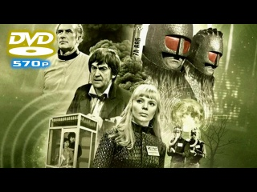
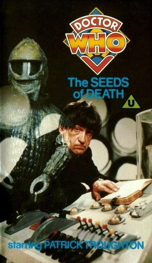
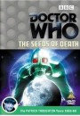
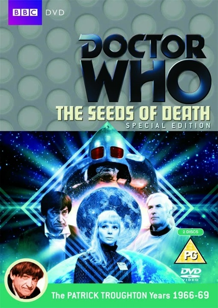
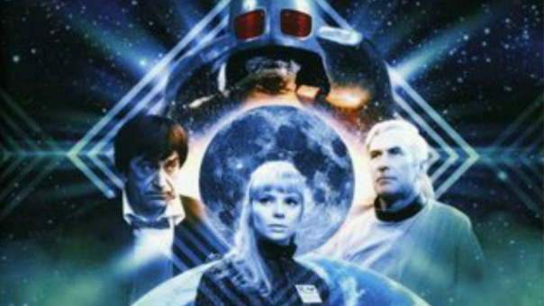
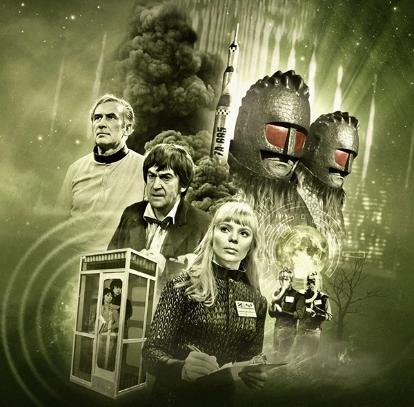

Субтитры: Русские и Английские |  |
|---|
| Все эпизоды сохранились - 16mm t/r * 1-й эпизод так же сохранился на - 35mm t/r |
|---|
| |
Ледяные воины захватывают лунную базу и готовят вторжение на Землю: через сеть Т‑Мэт они рассылают ядовитые семена, которые выжигают кислород и делают планету пригодной для марсиан. Доктор, Джейми и Зои отправляются на Луну на старой ракете и вступают в схватку с ледяной угрозой. Это второй выход Ледяных воинов в эпоху Второго Доктора — здесь они действуют масштабно и хладнокровно, а кульминация строится вокруг жертвы техника Фьюшэма, который ценой своей жизни срывает их план. Сеттинг — футуристическая Луна с сетью телепортации, где каждый коридор может стать ловушкой.
 VHS - июль 1985 |  DVD - 17 февраля 2003 |   DVD-SE+Boxset - 28 марта 2011 * Версия в нашей группе |
|---|

